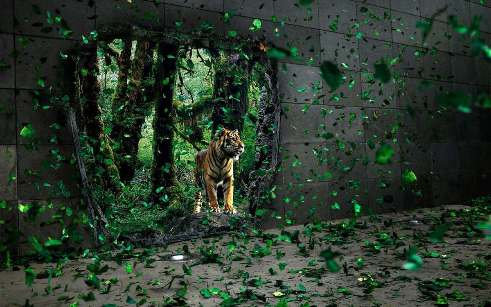

Prin junglă
S-a rătăcit prin junglă
Și umblâ disperat
Neștiind că-o să ajungă
La zidu-acesta spart
Și curios din fire
Fiind foarte flămând
Se sperie de un câine
Ce latră scheunând
Și renunțând la toate
Se-ndreaptă iar spre junglă
Trăgând nădejde poate
Confrații dă-i ajungă!
Vasile Groza